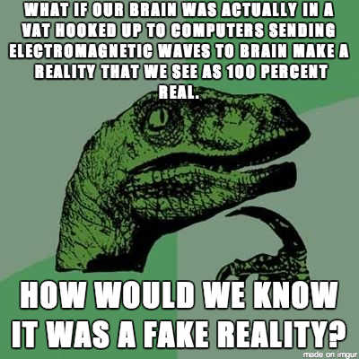

Epistemology
Summary, Quick and Simple
Epistemology is also known as the theory of knowledge. Epistemology typically deals with questions about what knowledge is, what criteria do we need to meet to be able to say that we have knowledge, and what needs to occur for knowledge to exist. Skepticism in this sense is not merely criticism of some idea or thing as it usually is when we talk about it in our daily lives. It is the wholesale doubt that we can know anything for reasons ranging from the denial of the existence of knowledge to the denial that people can have access to the truth about the world we live in.
Thought Experiments
Descartes' Meditations
In Descartes' Meditations, he asks if there is anything that we can know for certain. The problem is that our senses have no guarantee of revealing the truth about the world to us, for I may see that an object is one color, when really it is another, like this. I might be in a dream and not know it, or there could be a malevolent being feeding these images, sounds, and other sensations to my brain that I am unaware of. What do I know then (hint: I am thinking)?
Brain in a Vat
A widely used thought experiment in studying knowledge, the brain in a vat argument is an alternate form of Descrates' first meditation on whether or not one can know anything about the world outside one's own mind. The brain in a vat scenario posits that since our brains receive sense data through electrical charges, it could be possible that we are all brains in vats receiving electric stimulation that mimics the experiences that we believe we have. What's to say that we aren't all brains in vats a la the Matrix movies? There are several responses to this hypothetical, but I'll leave you to find out for yourself!
Why it's important to think about
Without the questioning of what knowledge is, we would not have the scientific method. Hume, the British Empiricist whose ideas eventually led to the development of the scientific method argued that we cannot know of causation because our senses are not guaranteed to tell us everything about the world. We may observe a cause and effect, but for all we know the event we think of as the effect is merely coincidental to the event we think is the cause. We can only point out patterns that we observe in the world since the assumptions we make about our senses may not always be the case. In a more relevant and contemporary example, how we think about knowledge is essential to how we act as citizens of the U.S. When the Bush administration stated that it had "actionable intel" on Saddam-Controlled Iraq, it was important for us as a nation to consider a) what constitutes actionable intel (knowledge we should act on) and b) what do we know about the government's willingness to be honest (government transparency). I cannot say if the Bush administration's actions were right or wrong, but I can say that we as a nation perhaps could have thought harder about the consequences before we acted.